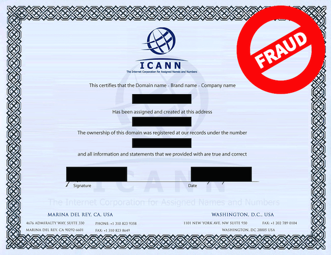

August 1, 2014


July was a bit of a slow month for new generic top-level domain (gTLD) launches, with only four cracking the 5,000-registrations mark so far: .voting, .services, .kaufen, and .tokyo, which is now the 20th most popular gTLD overall. But things may be looking up for August, with nine gTLDs containing less than five characters (it’s thought that four or less may be the sweet spot for TLD popularity).
Especially interesting is the August 13th launch of four medical-specific gTLDs: .care, .clinic, .dental, and .surgery. The usefulness of being able to type in something like LOCATION.clinic to get a relevant result is undeniable, so it wouldn’t be at all surprising to see some of these take off.
Read more →
July 31, 2014

We’re big fans of all the new generic top-level domains (TLDs) coming out, but we have a fascination of sorts with the extensions that are particularly off-kilter. The ones that probably won’t be used for traditional company websites and blogs, but for strange creations and alternative microsites.
Next week, we have three launching—.fail, .rocks, and .wtf. And we don’t really have any expectations on their registration numbers, but we’re super interested in seeing what kinds of domains get created.
Read more →
July 30, 2014

You rarely think about the cogs that make things work when you’re browsing a site, but I’d like to direct your attention to our domain search—the big search bar on the homepage that lets you search for and buy domain names.
Read more →
July 29, 2014
From Flavio Martins – DigiCert:
On July 26,2014 at 12:15 PM, some customers and users on sites secured by DigiCert reported that they were getting an untrusted certificate error.
The problem is related to a locally installed legacy intermediate certificate that is no longer used and no longer required for the certificate installation. The problem can affect any client platform with a locally cached or installed intermediate certificate.
We use (and really like) DigiCert for SSL, but it looks like there’s been a minor hiccup for some users. If you’re getting an untrusted certificate error when you visit iwantmyname, this is a great (and easy) step-by-step guide on how to fix it.
And if you need any additional help, definitely let us know.
July 25, 2014
We typically like to spare our customers the politics of the web, but Vint Cerf, the “father of the internet” (who now works for Google) recently narrated a great video explaining the transition of internet oversight from the influence of the NTIA (a US government organization) to the more global ICANN.
It’s short, educational, and has a great frame at 2:22 where a drawn depiction of Vint Cerf is sitting on top of a giant angry cat under a rainbow (I believe he just won the internet).
Read more →
July 25, 2014


We regularly post articles to help you get started with your own website, whether it’s expected costs for a business site, how to economically showcase your photos, or really easy ways to get a domain and site up and running.
But then what? In the same way that just buying a domain won’t magically make a website appear, getting your website online won’t magically make customers, audience, or community appear. As a side note, while SEO can be an important part of building your presence online, we’re not going to get into it in this post, as that’s a whole other big, complex topic. For an intro though, this is a great start.
Let’s take a look at some things to think about and research. We’ll also get into some actions to take to build your profile and engagement online and encourage people to visit your site. You could be trying to grow your customer base, build a community, or assemble an audience/fan base. People are people no matter how you’re interacting with them, so these tactics can be broadly applied.
Read more →
July 24, 2014


The following is a guest post written by DonationTo.
DonationTo is an easy-to-use fundraising website that has integrated with iwantmyname to make it easy to use personalized domain names when crowd-funding online. The method is rather easy—it takes just five minutes to create a fundraising page at DonationTo and just a few moments more to purchase and plug in your domain name with iwantmyname. And by the end, you’ll have a great, easy-to-remember domain such as ‘james-fighting-cancer.com’ as your hub for accepting donations.
Read more →
July 23, 2014

From anyname.nz:
From 1pm, 30 September 2014, ‘second level’ domains like the .co in ‘.co.nz’ and the .org in ‘.org.nz’ will become optional. You’ll be able to get .nz names with them, without them, or both.
In plain English, the .NZ domain extension will be open to the public on September 30th at 1pm (hooray!). And if you’re a current owner of a .CO.NZ, .ORG.NZ, etc. domain, you’ll have a two-year safe period to reserve your corresponding .NZ domain.
We’ll be sending out more specific details closer to the launch date, but in the meantime there are two things you can do.
Read more →
July 18, 2014
From ICANN, in an article titled “Fraudulent ICANN Domain Name Certificates”:
It has been brought to ICANN’s attention that some online entities have attempted to sell fraudulent “certificates”, which they claim are required to protect generic top-level domain names. The perpetuators of this scam threaten registrants on the protection service with the objective of securing a fee from the registrant. The “certificates” look official and include an unauthorized use of the ICANN logo.

Please note that ICANN does not issue certificates to registrants and does not collect fees from registrants directly.
Read more →
July 18, 2014

I think it’s safe to say that the new generic-top level domains (gTLDs) have been a moderate success up to this point. If you take a look at ntldstat.com’s new gTLD registrations chart, you won’t find dramatic gains, but the line is consistently trending upwards with more gTLDs coming out each week. And that’s not likely to change.
At some point though, the success of the new gTLDs won’t be determined by numbers (numbers can be skewed), but by visibility. Specifically, by the amount of big sites that use gTLDs as their primary internet outposts. So while we wait for BMW.com to become BMW.auto, we can hold ourselves over with Domain Incite Pro’s newly released feature that tracks sites using new gTLDs by Alexa Rank.
There aren’t any sites using gTLDs in the Alexa top 500 yet, but there are 34 in the top 100,000 (which is a big deal considering the new domain extensions are still fairly new). I won’t list them out individually (some could be malicious), but breaking them out by gTLD shows some pretty interesting trends.
Read more →
Older posts